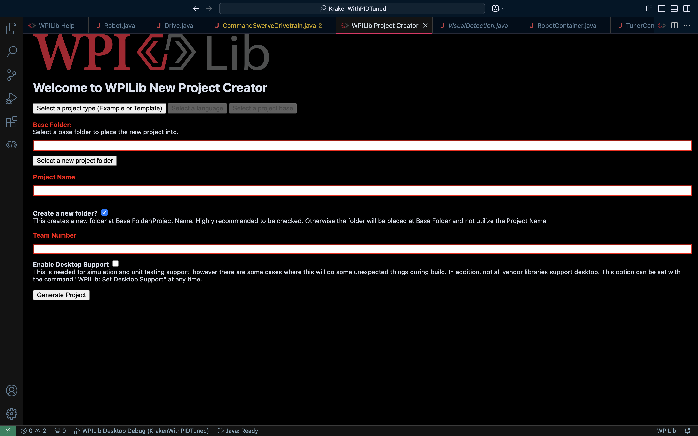

Day 2 程式組要幹嘛#
程式組基本上就是在寫程式讓機器人動起來，目前官方提供的語言有Java, C++跟Python, 不過因為Java是FRC中網路資源最多的語言(碾壓式)，所以這幾次穩張都是以Java為主。
新建專案#
在打開WPI VScode之後，按下F1/ctrl+shift+p/cmd+shift+p叫出指令列，然後打Create New Project，他就會跳到一個頁面長這樣
{kind=link}
在最上面那一條可以選的地方，先選擇Template>Java，接下來就是要展開來講的地方了
FRC的程式架構#
Timed Based#
Timed Based 是最基礎的程式架構，他雖然簡單直覺，但是在大程式(比如說向量底盤)就會變得非常地難以管理與除錯，所以這時候就有另外一個架構就誕生了
Command Based#
Command Based 是目前最常見的程式架構，以指令為基礎控制，將每個功能都模組化，這就是Command Based要做的事情(雖然他是從Timed延伸過來就是了)
程式範例#
(以KOP底盤舉例)
// Copyright (c) FIRST and other WPILib contributors.
// Open Source Software; you can modify and/or share it under the terms of
// the WPILib BSD license file in the root directory of this project.
package frc.robot;
import com.revrobotics.spark.SparkMax;
import com.revrobotics.spark.SparkBase.PersistMode;
import com.revrobotics.spark.SparkBase.ResetMode;
import com.revrobotics.spark.SparkLowLevel.MotorType;
import com.revrobotics.spark.config.SparkMaxConfig;
import com.revrobotics.spark.config.SparkBaseConfig.IdleMode;
import edu.wpi.first.wpilibj.Joystick;
import edu.wpi.first.wpilibj.TimedRobot;
public class Robot extends TimedRobot {
public SparkMax LeftMotor, RightMotor;
private SparkMaxConfig LeftConfig, RightConfig;
public Joystick joystick;
public Robot() {
LeftMotor = new SparkMax(0, MotorType.kBrushless); //範例馬達，ID為0<--要另外設定
RightMotor = new SparkMax(1, MotorType.kBrushless); //範例馬達，ID為1<--是唯一的
LeftConfig = new SparkMaxConfig();
RightConfig = new SparkMaxConfig();
LeftConfig
.idleMode(IdleMode.kBrake) //馬達的模式，急煞或是自然
.inverted(false); //馬達反轉
RightConfig
.idleMode(IdleMode.kBrake)
.inverted(true);
LeftMotor.configure(LeftConfig, ResetMode.kResetSafeParameters, PersistMode.kPersistParameters); //把設定鬥到馬達上
RightMotor.configure(RightConfig, ResetMode.kResetSafeParameters, PersistMode.kPersistParameters);
joystick = new Joystick(0);
}
@Override
public void robotPeriodic() {}
@Override
public void autonomousInit() {}
@Override
public void autonomousPeriodic() {}
@Override
public void teleopInit() {}
@Override
public void teleopPeriodic() { //手動模式他會做的事
LeftMotor.set(joystick.getRawAxis(1)+joystick.getRawAxis(0));
RightMotor.set(joystick.getRawAxis(1)-joystick.getRawAxis(0));
}
@Override
public void disabledInit() {
LeftMotor.stopMotor();
RightMotor.stopMotor();
}
@Override
public void disabledPeriodic() {}
@Override
public void testInit() {}
@Override
public void testPeriodic() {}
@Override
public void simulationInit() {}
@Override
public void simulationPeriodic() {}
}
//Constants.java
package frc.robot;
public class Constants {
public static final int LeftMotorID = 0;
public static final int RightMotorID = 1;
}
//subsystems/KOPChassis.java
package frc.robot.subsystems;
import com.revrobotics.spark.SparkMax;
import com.revrobotics.spark.SparkBase.PersistMode;
import com.revrobotics.spark.SparkBase.ResetMode;
import com.revrobotics.spark.SparkLowLevel.MotorType;
import com.revrobotics.spark.config.SparkMaxConfig;
import com.revrobotics.spark.config.SparkBaseConfig.IdleMode;
import edu.wpi.first.wpilibj2.command.SubsystemBase;
import frc.robot.Constants;
public class KOPChassis extends SubsystemBase{
public SparkMax LeftMotor, RightMotor;
private SparkMaxConfig LeftConfig, RightConfig;
public KOPChassis(){
LeftMotor = new SparkMax(Constants.LeftMotorID, MotorType.kBrushless);
RightMotor = new SparkMax(Constants.RightMotorID, MotorType.kBrushless);
LeftConfig = new SparkMaxConfig();
RightConfig = new SparkMaxConfig();
LeftConfig
.idleMode(IdleMode.kBrake)
.inverted(false);
RightConfig
.idleMode(IdleMode.kBrake)
.inverted(true);
LeftMotor.configure(LeftConfig, ResetMode.kResetSafeParameters, PersistMode.kPersistParameters);
RightMotor.configure(RightConfig, ResetMode.kResetSafeParameters, PersistMode.kPersistParameters);
}
public void drive(double speed, double rotation){
LeftMotor.set(speed+rotation);
RightMotor.set(speed-rotation);
}
}
//commands/ChassisCmd.java
package frc.robot.commands;
import java.util.function.Supplier;
import edu.wpi.first.wpilibj2.command.Command;
import frc.robot.subsystems.KOPChassis;
public class ChassisCmd extends Command{
public KOPChassis chassis;
public Supplier<Double> DriveSpeedFunc, RotationSpeedFunc;
public ChassisCmd(KOPChassis chassis, Supplier<Double> DriveSpeedFunc, Supplier<Double> RotationSpeedFunc){
this.chassis = chassis;
this.DriveSpeedFunc = DriveSpeedFunc;
this.RotationSpeedFunc = RotationSpeedFunc;
addRequirements(chassis);
}
@Override
public void execute(){
chassis.drive(DriveSpeedFunc.get(), RotationSpeedFunc.get());
}
}
//RobotContainer.java
package frc.robot;
import edu.wpi.first.wpilibj.Joystick;
import edu.wpi.first.wpilibj2.command.Command;
import edu.wpi.first.wpilibj2.command.Commands;
import frc.robot.commands.ChassisCmd;
import frc.robot.subsystems.KOPChassis;
public class RobotContainer {
public KOPChassis chassis = new KOPChassis();
public Joystick joystick = new Joystick(0);
public RobotContainer() {
chassis.setDefaultCommand(new ChassisCmd(
chassis,
() -> joystick.getRawAxis(1),
() -> joystick.getRawAxis(0)));
configureBindings();
}
private void configureBindings() {}
public Command getAutonomousCommand() {
return Commands.print("No autonomous command configured");
}
}
除了底盤的程式編寫以外，還有其他機構與視覺辨識等項目，非常的多呢。